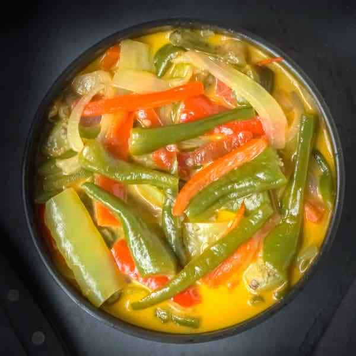

Home
Ema Datshi

Bhutan's National Dish
Ema Datshi is the national dish of Bhutan, a fiery and flavorful stew made primarily from chili peppers ("ema") and cheese ("datshi"). It is a staple of the Bhutanese diet, served with red rice and considered a must-try dish to experience Bhutanese culture.
Ingredients
- Fresh green/red chilies -10–12 (adjust to your spice level)
- Onion – 1 large (sliced)
- Garlic – 3–4 cloves (chopped)
- Tomatoes – 2 medium (optional, for a milder taste)
- Butter – 1–2 tbsp
- Cooking oil – 1 tbsp
- Cheese – about 200 g
- Water – 1–2 cups
- Salt – to taste
- Coriander leaves – a handful (optional, for garnish)
- Wash and slice the chilies lengthwise.
- In a pan, add oil and butter. Sauté onions and garlic until soft.
- Add chilies and tomatoes
- Pour in about 1–2 cups of water, just enough to cover the chilies.
- Reduce heat and add the cheese.
- Add salt to taste.
- Serve hot with steamed red or white rice.